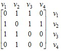

электронный
ресурс по учебной дисциплине
1-40 02 01 «Вычислительные машины, системы и сети»
|
||
| Оглавление | Программа | Теория | Практика | Контроль знаний | Об авторах | ||
Г л а в а 3
Основные понятия теории графов
3.1. Абстрактный граф
Граф можно определить как совокупность двух множеств: G = (V, E), где V – непустое множество, элементы которого называются вершинами, и Е – произвольное множество пар (vi, vj) элементов из множества V, т. е. vi ∈ V, vj ∈ V, Е ⊆ V 2. Элементы множества Е называются ребрами.
Само понятие графа подразумевает графическое представление данного объекта. Вершины изображаются точками, а ребра – линиями, соединяющими эти точки. Если ребра представляют упорядоченные пары вершин, соответствующие линии изображаются стрелками (рис. 3.1). Такие ребра называют ориентированными ребрами или, чаще, дугами. В этом случае имеем дело с ориентированным графом в отличие от неориентированного графа, на ребрах которого порядок вершин не задан.
а) б)
Рис. 3.1. Примеры графов: а) неориентированный;
б) ориентированный
Вершины неориентированного графа, связываемые ребром, считаются концами этого ребра. Например, концами ребра е2 графа на рис. 3.1, а являются вершины v1 и v3. Принято обозначать ребра также парами их концов, например е2 = v1v3. Всякая упорядоченная пара вершин (vi, vj), представляющая дугу в ориентированном графе, имеет начало vi и конец vj. Говорят, что дуга выходит из начала и входит в конец. В ориентированном графе на рис. 3.1, б началом дуги а4 является вершина v3 и концом – вершина v2. Это можно представить как a4 = (v3, v2).
Между вершинами и ребрами неориентированного графа так же, как между вершинами и дугами ориентированного графа, существует отношение инцидентности. При этом в неориентированном графе G = (V, E) вершина v ∈ V и ребро е ∈ Е инцидентны, если v является одним из концов ребра е. В ориентированном графе G = (V, А) вершина v ∈ V и дуга а ∈ А инцидентны, если v является началом либо концом дуги а. Две вершины неориентированного графа смежны, если они инцидентны одному и тому же ребру.
Граф может содержать петли, т. е. ребра, концы которых совпадают, или дуги, у которых начало совпадает с концом. Очевидно, ориентация петли несущественна.
Множество всех вершин графа G, смежных с вершиной v, называется окрестностью вершины v и обозначается символом N(v). Мощность множества N(v), обозначаемая d(v), называется степенью вершины v. В ориентированном графе с некоторой вершиной v подобным образом связаны два множества: полуокрестность исхода N +(v) – множество вершин, в которые входят дуги, исходящие из вершины v, и полуокрестность захода N ‑(v) – множество вершин, из которых исходят дуги, заходящие в v. Соответственно мощность множества N +(v) называется полустепенью исхода и обозначается d +(v), а мощность множества N ‑(v) – полустепенью захода и обозначается d ‑(v). Можно говорить об окрестности N(v) и степени d(v) вершины v ориентированного графа. При этом
N(v) = N +(v) ∪ N ‑(v) и d(v) = d +(v) + d ‑(v).
Для неориентированного графа с множеством ребер Е очевидно следующее соотношение:
= 2|Е|,
откуда следует, что в любом неориентированном графе число вершин с нечетной степенью всегда четно.
Для ориентированного графа с множеством дуг А имеем
= |А|.
В практических приложениях граф (ориентированный или неориентированный), как правило, является конечным, т. е. его множество вершин конечно. Специальный раздел теории графов изучает также бесконечные графы, у которых множество вершин бесконечно.
Граф G = (V, E), у которого множество ребер пусто, т. е. Е = ∅, называется пустым графом. Неориентированный граф называется полным, если любые две его вершины смежны. Полный граф, число вершин которого п, обозначается символом Kn.
Обозначим множество ребер полного графа символом U. Дополнением графа G = (V, E) является граф¬G = (V,¬E), у которого ¬E = U \ E. Очевидно, что всякий полный граф является дополнением некоторого пустого графа и, наоборот, всякий пустой граф является дополнением некоторого полного графа.
Граф называется двудольным, если множество его вершин V разбито на два непересекающихся подмножества V′ и V′′ , а концы любого его ребра находятся в различных подмножествах. Такой граф задается как G = (V′, V′′, E) или как G = (V′, V′′, A). В полном двудольном графе (V′, V′′, E) каждая вершина из V′ связана ребром с каждой вершиной из V′′. Полный двудольный граф, у которого |V′ | = p и |V′′ | = q, обозначается символом Kp, q.
3.2. Графическое представление бинарного отношения
Наглядными примерами графов служат схемы железных дорог, помещаемые на стенах больших вокзалов, и схемы авиалиний в аэропортах. Характерным для таких схем является несоблюдение масштаба, несмотря на то, что они изображаются на фоне очертания страны или контуров материков земного шара. Тем самым подчеркивается, что здесь важна связь (бинарное отношение «есть линия») между населенными пунктами, но не расстояние.
Граф в том виде, как он определен выше, является, по сути дела, графическим представлением бинарного отношения. Пусть задано бинарное отношение R ⊆ А × В. Если А ∩ В = ∅, то данное отношение можно представить двудольным ориентированным графом G = (А, В, R), где каждая пара (a, b) ∈ R представляется дугой, исходящей из вершины а и заходящей в вершину b. На рис. 3.2 представлено отношение R между элементами множеств А и В, где A = {a1, a2, a3}, B = {b1, b2, b3, b4, b5}, R = {(a1, b1), (a1, b2), (a1, b3), (a1, b5), (a2, b2), (a2, b4), (a3, b3)}.
Операция композиции отношений, рассмотренная в предыдущей главе, проиллюстрирована на рис. 3.3, где отношение R между элементами множеств А и В и отношение S между элементами множеств В и С показаны совместно (рис. 3.3, а). В представлении отношения SR на рис. 3.3, б видно, что вершина а ∈ А соединена с вершиной с ∈ С дугой тогда и только тогда, когда существует вершина b ∈ В, которая в графе на рис. 3.3, а является концом дуги, исходящей из а, и началом дуги, заходящей в с.
а) б)
б) отношение SR
В графическом представлении функционального отношения R = {(a, b), (c, b), (b, d), (e, d), (d, d)} между элементами множеств A = {a, b, c, d, e} и В = {b, d, e}, рассмотренного в предыдущей главе, из каждой вершины выходит только одна дуга, включая петли (рис. 3.4).
Рис. 3.4. Представление функционального отношения
3.3. Матричные представления графа
Поскольку граф можно рассматривать как графическое представление некоторого бинарного отношения, его можно задать той же булевой матрицей, которая задает данное отношение и описана в предыдущей главе. Эта матрица называется матрицей смежности графа. Строки и столбцы матрицы смежности соответствуют вершинам графа, а элемент ее на пересечении строки vi и столбца vj имеет значение 1 тогда и только тогда, когда вершины vi и vj смежны. В матрице смежности ориентированного графа этот элемент имеет значение 1, если и только если в данном графе имеется дуга с началом в вершине vi и концом в вершине vj. Графы, показанные на рис. 3.1, имеют следующие матрицы смежности:
, .
Нетрудно видеть, что матрица смежности неориентированного графа обладает симметрией относительно главной диагонали.
Ориентированный граф можно задать также матрицей инцидентности, которая определяется следующим образом. Ее строки соответствуют вершинам графа, столбцы – дугам. Элемент на пересечении строки v и столбца а имеет значение 1, если вершина v является началом дуги а, и значение –1, если v является концом дуги а. Если вершина v и дуга а не инцидентны, то указанный элемент имеет значение 0. Матрица инцидентности неориентированного графа имеет тот же вид, только в ней все значения –1 заменяются на 1. Матрицы инцидентности графов на рис. 3.1 будут иметь следующий вид:
, .
Заметим, что при матричном представлении графа его вершины, а также ребра или дуги оказываются упорядоченными. Любая строка матрицы смежности является векторным представлением окрестности соответствующей вершины. Любой столбец матрицы инцидентности неориентированного графа содержит ровно две единицы. Сумма значений элементов любого столбца матрицы инцидентности ориентированного графа равна нулю.
3.4. Части графа
Граф Н = (W, F) называется подграфом графа G = (V, E), если W ⊆ V, F ⊆ E и обе вершины, инцидентные любому ребру из F, принадлежат W. Подграф Н графа G называется его остовным подграфом, если W = V. Если F является множеством всех ребер графа G, все концы которых содержатся в множестве W, то подграф Н = (W, F) называется подграфом, порожденным множеством W.
Любая последовательность вида v1, e1, v2, e2, … , ek, vk + 1, где v1, v2, … , vk + 1 – вершины некоторого графа, а e1, e2, … , ek – его ребра, причем ei = vivi + 1 (i = 1, 2, … , k), называется маршрутом. Маршрут может быть конечным либо бесконечным. Одно и то же ребро может встречаться в маршруте не один раз. Длиной маршрута называется количество входящих в него ребер, причем каждое ребро считается столько раз, сколько оно встречается в данном маршруте.
Маршрут, все ребра которого различны, называется цепью. Цепь, все вершины которой различны, называется простой цепью. С понятием длины цепи связано понятие расстояния в графе. Под расстоянием между двумя вершинами понимается длина кратчайшей цепи, связывающей данные вершины.
Маршрут v1, e1, v2, e2, … , ek, v1 называется циклическим. Циклическая цепь называется циклом. Простой цикл – это циклическая простая цепь.
Любую цепь и любой цикл графа можно рассматривать как его подграф.
Граф является связным, если между любыми двумя его вершинами имеется цепь. Связный подграф некоторого графа, не содержащийся ни в каком другом его связном подграфе, называется компонентой связности или просто компонентой данного графа.
В ориентированном графе маршрутом называется последовательность вида v1, а1, v2, а2, … , аk, vk + 1, где для всякой дуги аi вершина vi является началом, а vi + 1 – концом. Вершина v1 является началом маршрута, а вершина vk + 1 – его концом. Маршрут, в котором все вершины, кроме, возможно, начальной и конечной, различны, называется путем. Путь вида v1, а1, v2, а2, … , аk, v1 называется контуром.
Вершина vj в ориентированном графе является достижимой из вершины vj, если в этом графе имеется путь с началом в vi и концом в vj. Ориентированный граф является сильно связным, если любая его вершина достижима из любой вершины.
Ориентированный граф называется транзитивным, если из существования дуг ap = (vi,vj) и aq = (vj,vk) следует существование дуги ar = (vi,vk). Транзитивным замыканием ориентированного графа G = (V, А) называется граф G* = (V, А*), где А* получено из А добавлением минимально возможного количества дуг, необходимого для того, чтобы граф G* был транзитивным.
3.5. Обобщения графов
Существуют различные обобщения понятия графа. Одним из таких обобщений является мультиграф. Это граф, в котором любые две вершины могут быть связаны любым количеством ребер, т. е. мультиграф допускает кратные ребра.
В некоторых задачах используются графы, на множествах вершин или ребер которых заданы функции, принимающие значения из множеств действительных, целых или натуральных чисел. Эти значения называются весами. Тогда речь идет о взвешенных графах, о графах со взвешенными вершинами, со взвешенными ребрами или со взвешенными дугами. Графы со взвешенными ребрами используются в транспортных задачах и в задачах о потоках в сетях. Мультиграф можно рассматривать как граф, ребра которого взвешены натуральными числами, представляющими кратности ребер.
Иногда рассматриваются смешанные графы, у которых наряду с элементами ориентированного графа (дугами) имеются элементы неориентированного графа (ребра). Ребром может быть заменена пара противоположно направленных дуг в ориентированном графе, соединяющих одни и те же вершины. Смешанные графы используются при решении задач, связанных с установлением схемы выполнения операций в технологическом процессе.
Еще одним обобщением понятия графа является гиперграф, который также представляет собой два множества – множество вершин и множество ребер, однако если ребром графа является пара вершин, то ребром гиперграфа может быть любое непустое подмножество множества вершин.
Гиперграф может служить моделью принципиальной электрической схемы. При этом полюса элементов данной схемы соответствуют вершинам гиперграфа, а электрические цепи – ребрам. Электрическая цепь здесь рассматривается как множество выводов, соединенных между собой проводниками. Многие понятия, связанные с графами, распространяются на случай гиперграфа, однако графически изобразить гиперграф гораздо труднее, чем граф. Вместе с тем от гиперграфа можно перейти к двудольному графу, долями которого являются множество вершин и множество ребер гиперграфа, а ребра показывают принадлежность вершин гиперграфа его ребрам.
| (С) БГУИР |